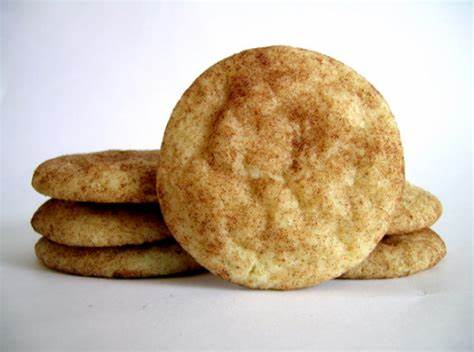

(optional) 1 1/2 cups of chopped walnuts, pecans, or hazelnuts
Putting it together!
First were going to put in a large bowl or mixing bowl the 1 cup of butter. Beat for 30 seconds.
Next add the brown sugar, white sugar, and the baking soda.
Beat the mixture until it all combined. Make sure to scrap the side to get all the stuff in the mixture.
Now add the eggs and vanilla until combined
Add in the flour make sure you get most of it in the cookie.
Next stirred in the chocolate chips in to it.
Cooking the Cookie!
Set the store to 375 degrees fahrenheit. Put some cooking spary or parchment paper on the pan.
Use a cookie scoop or a spoon, put some cookie dough on the cookie sheet. Put in the store for 10 min.
Take them out and let them sit for 5min before putting them on the cooling rack.
And now your Finish
How to make Melt in your Mouth Sugar Cookies!
Makes up to sixty cookies
Ingredients
1 cup of butter, softened
2 cups of sugar
1 teaspoon of baking soda
1 teaspoon of cream of tartar
1/8 teaspoon of salt
3 eggs yolks
1/2 teaspoon of vanilla
1 3/4 cups of all-purpose flour
Putting it together!
First were going to put in a large bowl or mixing bowl the 1 cup of butter. Beat for 30 seconds.
Next add sugar,baking soda, salt, and cream of tartar
Beat the mixture until it all combined. Make sure to scrap the side to get all the stuff in the mixture.
Now add the eggs yolks and vanilla and beat until combined
Add in the flour make sure you get most of it in the cookie.
Cooking the Cookie!
Set the store to 300 degrees fahrenheit. Put some cooking spary or parchment paper on the pan.
Use a cookie scoop or a spoon, put some cookie dough on the cookie sheet. Put in the store for 13 min.
Take them out and let them sit for 2min before putting them on the cooling rack.
And now your Finish
How to make snickerdoodles!

Makes up to sixty cookies
Ingredients
1/2 cup of butter, softened
1 cups of sugar
1/4 teaspoon of baking soda
1/4 teaspoon of cream of tartar
1 eggs
1/2 teaspoon of vanilla
1 1/3 cups of all-purpose flour
2 tablespoons sugar
1 teaspoon ground cinnamon
Putting it together!
First were going to put in a large bowl or mixing bowl the 1/2 cup of butter. Beat for 30 seconds.
Next add sugar,baking soda, and cream of tartar
Beat the mixture until it all combined. Make sure to scrap the side to get all the stuff in the mixture.
Now add the egg and vanilla and beat until combined
Add in the flour make sure you get most of it in the cookie.
Cover the dough and but in the fridge for a hour
Cooking the Cookie!
Combine the 2 tablespoons of sugar and 1 teaspoon of cinnamon in a bowl. Set the store to 375 degrees fahrenheit. roll the balls in the mixture and put it on the pan.
Using a fork press down the top of the ball a litte bit. Put in the store for 10 min.
Take them out and let them sit for 5min before putting them on the cooling rack.